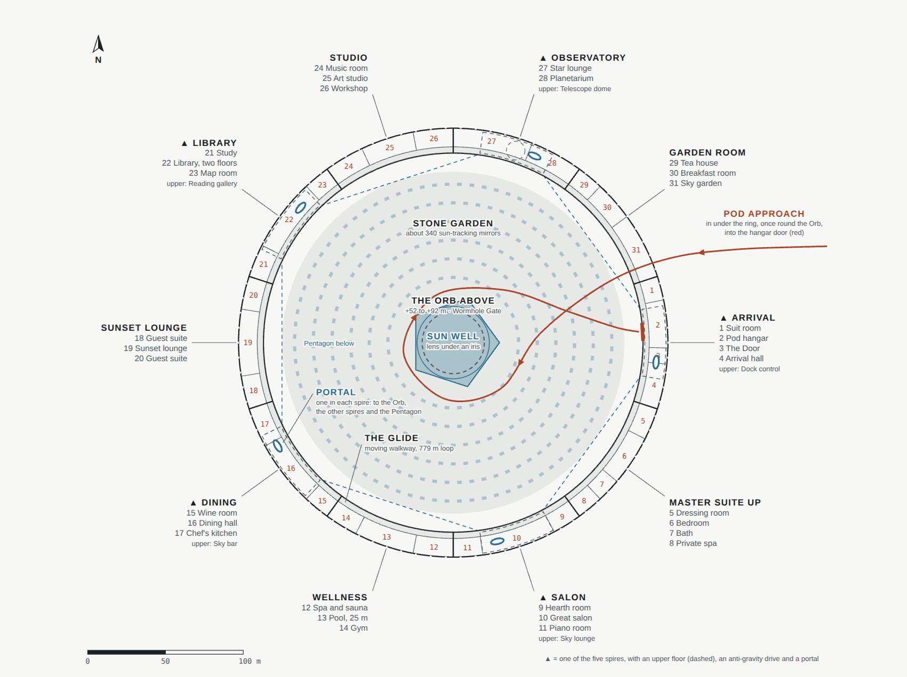

The Crown, room by room
The Crown's main floor is a ring 10 m wide and 276 m across, 41 m above the Stone Garden. The rooms run along the outer wall; the Glide, a moving walkway, runs along the garden side and links every part in a 779 m loop. Window slots 1.2 m tall run through both walls, framing the plain on one side and the mirror Orb on the other. Five spires rise over the Arrival hall, the Salon, the Dining hall, the Library and the Observatory, and each holds a portal.
 Part 2The master suite up
Part 2The master suite up Part 3The Salonpictures to comePart 4Wellnesspictures to comePart 5Diningpictures to comePart 6The sunset loungepictures to comePart 7The Librarypictures to comePart 8The Studiopictures to comePart 9The Observatorypictures to comePart 10The Garden room
Part 3The Salonpictures to comePart 4Wellnesspictures to comePart 5Diningpictures to comePart 6The sunset loungepictures to comePart 7The Librarypictures to comePart 8The Studiopictures to comePart 9The Observatorypictures to comePart 10The Garden room
Arrival
Coming home. The pod flies into the hangar from the garden side; the hangar fills with air in about 90 seconds while the dust is blown off; then the Door, a ring of light 5 m across, opens for Jim and his guests alone. The Arrival hall beyond is 9 m tall, with the first window slot looking back over the garden to the Orb.
| Rooms | Suit room · Pod hangar · The Door · Arrival hall; dock control upstairs |
|---|---|
| Made of | Polished basalt underfoot, regolith plaster, an olive-wood bench, bronze reveals round the slots. |
| In it | The bench, an olive tree, and at the far end the portal to the Orb, the other spires and the Pentagon. |

The master suite up
Jim's morning rooms: the bed faces the south-east slot, so the sun rises straight across the room. He sleeps below ground most nights; this suite is for mornings, naps and the view.

| Rooms | Dressing room · Bedroom · Bath · Private spa with a soaking pool |
|---|---|
| Size | 995 m², in the Crown's south-east dip. |
| Made of | Pale oak walls and screens, a floor of linen-coloured stone, an oak-slat ceiling. |
| In it | The bed and its nightstands, a sitting corner by the slots, a writing desk, dressers, plants. |

The Salon
Where Jim has guests and music: the great salon, 45 m along the curve of the ring, a hearth room at one end and a piano room at the other, and the Sky lounge upstairs in the spire.
| Rooms | Hearth room · Great salon · Piano room; the Sky lounge upstairs |
|---|---|
| Made of | A floor of linen-coloured stone, regolith plaster, an oak-slat ceiling lit from its coves, olive wood. |
| In it | Three groups of linen sofas on wool rugs round olive-wood tables; olive trees in basalt planters; a hearth of lit mist; a concert grand. |

Wellness
Exercise and rest: a 25 m pool along the ring, where low gravity makes every wave rise high and fall slowly; a spa with a hot pool and a cedar sauna; a gym.
| Rooms | Spa and sauna · Pool, 25 m · Gym |
|---|---|
| Made of | A deck of polished basalt, pale stone in the pool, cedar, an oak-slat ceiling. |
| In it | A pool 25 m by 4 m and 1.5 m deep, lit from below; loungers along the Glide side; a round hot pool; a sauna with a glass front; a mirror wall and mats in the gym. |

Dining
Dinners for many: a dining hall for 24 at one table of polished basalt, the chef's kitchen, a wine room of Mars glass, and the Sky bar upstairs in the spire.
| Rooms | Wine room · Dining hall · Chef's kitchen; the Sky bar upstairs |
|---|---|
| Made of | Polished basalt, regolith plaster, linen, glass. |
| In it | The basalt table for twenty under glass globes, linen chairs, the afternoon sun low through the slots. |

The sunset lounge
The west side of the ring: low sofas face the west slots, and at sunset the sun shines straight down the room for a few minutes while the sky round it turns blue, as the sky of Mars does. A guest suite is at each end.
| Rooms | Guest suite · Sunset lounge · Guest suite |
|---|---|
| In it | Low sofas and chairs facing the slots, rugs, plants. |

The Library
The second library, under its own spire: two floors of walnut shelves along the outer wall with the window slots between them, a study, and a map room round a globe of Mars 3 m across.
| Rooms | Study · Library, two floors · Map room; a reading gallery upstairs |
|---|---|
| Size | 45 m along the ring and 9.5 m high under the spire. |
| Made of | Oak boards, walnut shelves and gallery, brass rails and pendants, a basalt plinth for the globe. |
| In it | A gallery reached by a spiral stair; low cases along the Glide; reading tables under brass pendants; leather chairs by the slots; the Mars globe in a bronze meridian; chests of map drawers. |

The Studio
A music room tuned for sound, an art studio with steady north light through the slots, and a workshop.
| Rooms | Music room · Art studio · Workshop |
|---|---|
| Pictures | Still to make. |

The Observatory
A star lounge with reclining chairs under the northern sky, a planetarium, and a telescope dome upstairs in the spire that opens at night. From here Earth is the evening star.
| Rooms | Star lounge · Planetarium; the telescope dome upstairs |
|---|---|
| Pictures | Still to make. |

The Garden room
A tea house, a breakfast room in the morning light, and a sky garden of fruit trees and herbs.
| Rooms | Tea house · Breakfast room · Sky garden |
|---|---|
| Pictures | Still to make. |